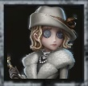
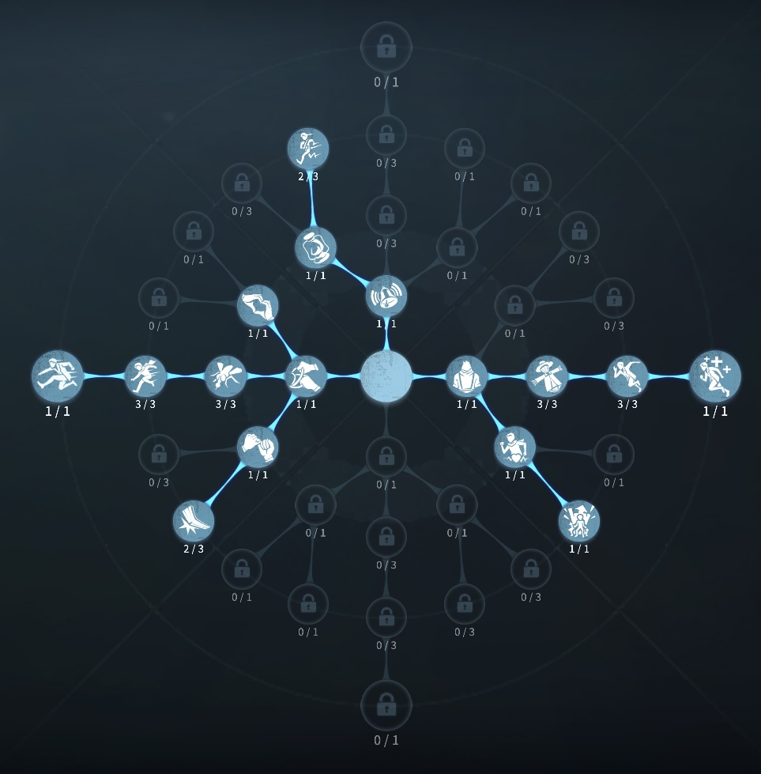
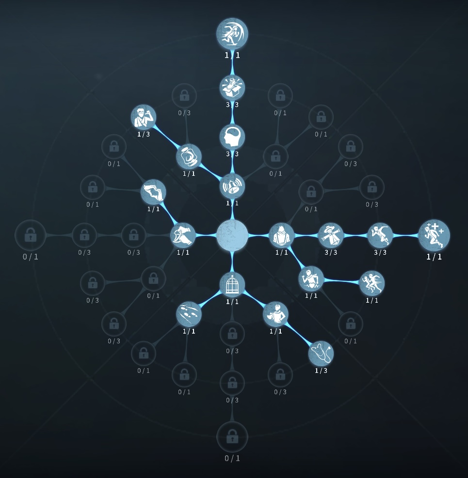

レディファウロの評価
透明化になって姿を眩ます
外在特質と特徴
特質1:雲隠れ
・ハンターの付近18ｍ以内に入ると、自動的に雲隠れ状態（透明化）になる。透明化中毎秒ゲージが6.25％溜まり、100％に達すると透明化が終了する。・ハンターの付近から離れるとゲージが毎秒5％減少する。がゲージが40%以上の状態でハンター付近から離れるとハンターに位置がバレる。
・透明化中ゲージが40%を超えている状態で特定の操作を行うと透明化が解除される。
・ダウンなどの行動不能状態は雲隠れ（透明化）のクールタイムが回復しない。
・雲隠れ中足跡を残さないが、痕跡が3秒間表示される。
・アロマの杖
指定方向に雲隠れの痕跡を直線に3秒間表示される。直進中に障害物に当たると沿うように 表示される。
特質2:妙計
・解読進捗が10％未満の暗号機を解読すると、解読進捗を10％まで進める。・解読進捗が1％以上あり、他のサバイバーに解読されていない暗号機を1台選択することができる。レディ・ファウロは解読する際に選択した暗号機の解読進捗が1秒ごとに1％減少するが、代わりに解読速度が25/20/15％上昇する。上昇効果は指定した暗号機と解読している暗号機の距離が近いほど上昇する。
特質3:乱局
・救助速度が60％増加する特徴
透明化でハンターから行方を眩ます。アロマの杖によっていろいろな方向に誘導可能
基本的な立ち回り方
1. 追われた時
透明化が始まり40％が近づく前に
アロマ杖を使って、ハンター方向に折り返したり2方向に分かれて姿を眩まそう！
40％から動いてしまうとハンターから姿を確認できるため操作には気をつけよう！
また、上手いハンターの場合折り返しがよまれる場合があるので気を付けておこう。
2. 追われない時
解読に専念しよう！
暗号進捗を奪うのは、寄せられて回せない暗号機や絶対に回さなくなった暗号機があれば使おう！
レディファウロの応用スキル
透明落下誘導
透明化でアロマの杖落下ポジションに使うことで、ハンターを落下へと誘導する
おすすめの内在人格
膝蓋腱反射型人格
この内在人格は、膝蓋腱反射で透明化のクールタイムを稼ぎつつ、怪力に2振ることで透明中に板当てを狙う

フライホイール型人格
この内在人格は、...


みんなのコメント